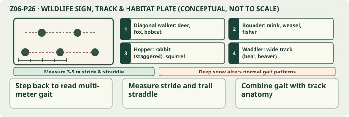

Z06-P26 · Hunting and fishing · New manuscript
Animal Gait Patterns: Walkers, Bounders, Hoppers and Gallopers
Use stride, straddle, and trail pattern across multiple meters to corroborate mammal family identification.
When it applies · Snowfields, sandbars, and trail corridors where continuous track lines remain visible.
Equipment · Measuring tape/ruler, notebook.

Actions
- Observe at least three to five meters of uninterrupted trail to distinguish diagonal walkers (deer, canines, felines), bounders (weasels, mink, otter), gallopers/hoppers (rabbits, squirrels), and wide waddlers (bear, beaver, porcupine, skunk).[H16]
- Measure stride (distance between consecutive prints of the same foot) and straddle (overall width of the trail) alongside snow depth, because deep snow forces animals to switch gaits.[H16]
- Use gait analysis strictly as ecological observation paired with individual print anatomy and habitat.[H16]
Failure recognition · Reading a single print without checking trail width and gait misclassifies fast-running canines as rabbits or drags in deep snow as larger species.[H16]
Verify · Stride, straddle, gait class, and individual pad features agree across multiple consecutive prints.[H16]
Stop or change course · Stop following continuous trails across frozen water, onto private property, or into dense cover with fresh predator sign.[H12, H16, H18]
Evidence and editorial notes
- H12 · Minnesota DNR · Living with Black Bears and Encounter Safety (Current web edition)
- Section: Black bear encounter avoidance and attractant control · Conditions: Campsites, fishing shores, and trails in bear range
Support: Store food, fish waste, and scented items securely; make calm noise in thick cover, back away slowly without running, and never approach cubs.
Limitations: Bear behavior varies with habituation and food stress; carry and know local bear-deterrent rules where appropriate. · Conflicting evidence: None noted.
Editorial note: Core Z06 wildlife encounter avoidance. · Specialist reviewer: Wildlife conflict specialist
Primary source · checked 2026-11-25
Current assessment · A04-H12 (2026-11-25) · Reopened: earlier closure narrowed (A04): Source supports managing attractants. The full behavior string spans encounters and may depend on species and behavior. Do not reuse as unconditional advice. Limits: Specialist review PENDING (Wildlife conflict specialist); publication HOLD. All release decisions pending. - H16 · Minnesota DNR · Mammals of Minnesota Species and Sign Reference (Current web edition)
- Section: Mammal ecology, seasonal movement, and sign interpretation · Conditions: Reading wildlife tracks, scat, browse, and trail patterns
Support: Substrate moisture, snow crust, and animal gait distort track dimensions; combine multiple signs and habitat context rather than single prints.
Limitations: Never handle unknown scat barehanded due to parasite eggs (e.g., Baylisascaris); sign interpretation is ecological observation, not harvest authorization. · Conflicting evidence: None noted.
Editorial note: Grounds Z06 tracking in ecology and hygiene. · Specialist reviewer: Wildlife ecologist
Primary source · checked 2026-11-25 - H18 · Minnesota DNR · Waterfowl Hunting and Federal Migratory Bird Rules (Current web edition)
- Section: Waterfowl cold-water capsizing and non-toxic shot compliance · Conditions: Wetland and open-water fall waterfowl environments
Support: Cold-water immersion, overloaded boats, and wading drop-offs cause severe fatalities; wear flotation, check forecasts, and verify federal non-toxic shot and species limits.
Limitations: Emergencies and weather shifts override harvest goals; stay ashore in high wind or unverified ice. · Conflicting evidence: None noted.
Editorial note: Reconciles B013 P15-P16 with Z06 water/ice limits. · Specialist reviewer: Water-safety and wildlife reviewer
Primary source · checked 2026-11-25
Source lineage · New manuscript (Z06 P17 track recognition) · Classification · New manuscript.